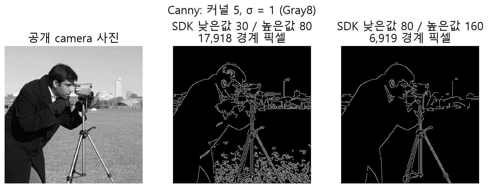

확인하려는 질문에 맞춰 읽기
픽셀의 변화를 확인할 때는 격자, 값의 분포는 그래프, 위치 관계는 좌표 도해로 읽습니다. 객체의 공유와 제어 상태는 관계도에서, 형식과 실행 조건은 비교표에서 확인합니다. 각 자료의 해설에는 실제 API 계약과 설명용 수치의 범위가 연결되어 있습니다.
대각선 픽셀은 같은 객체일까요?

임계값을 높이면 실제 사진의 경계가 어떻게 바뀔까요?

픽셀과 좌표를 비교하기
- 임계값과 블롭 중심
임계값 경계가 포함되는지, 두 전경 픽셀의 중심은 어디인지 보여 줍니다.
- 대각선 연결성 비교
같은 두 픽셀이 연결 방식에 따라 몇 개의 성분이 되는지 비교합니다.
- ROI와 원본 좌표
ROI의 로컬 점에 원점을 한 번 더해 원본 좌표를 구합니다.
- 이진 형태학의 픽셀 변화
같은 3×3 구조 요소를 쓴 침식·팽창·열림·닫힘 결과를 비교합니다.
- 단일 글자 줄과 ROI의 공간 관계
기본 인쇄 OCR이 읽는 ROI 안의 단일 문자 줄을 보여 줍니다.
- 격자 셀에서 3D 점으로
행·열 인덱스, 간격, 원점과 높이가 점의 좌표를 결정합니다.
- 점과 평면의 잔차
평면과 점 사이의 수직 거리를 표시해 잔차의 뜻을 설명합니다.
- 기본 AI 입력과 출력 좌표
종횡비를 유지하지 않는 기본 stretch의 축별 역변환을 예로 보여 줍니다.
- 검사 정렬과 유효 마스크
기준 격자를 검사 영상으로 대응할 때 영상 밖의 표본을 유효 비교에서 제외하는 이유를 보여 줍니다.
- 로컬·전역·평면 좌표
ROI 원점을 더한 뒤 보정 변환을 적용하는 순서를 공간과 수식으로 설명합니다.
분포·표본·실제 영상을 읽기
- 히스토그램 읽기
합성 표본 0, 0, 1, 3을 폭 1인 구간으로 나누면 빈도는 2, 1, 0, 1입니다.
- 가우시안 평활화
가운데 값이 1인 합성 입력과 σ=1인 3×3 정규화 커널에 대한 출력을 비교합니다.
- Canny 경계 단계
공개 camera 사진에 SDK Canny를 두 번 적용해 경계 마스크와 검출 픽셀 수를 비교합니다.
- NCC 점수 판독
합성 3×3 모델을 검색 영상의 (9,5)에 넣고 모든 유효 위치의 NCC를 계산합니다.
- 캘리퍼 프로파일
실제 camera 사진의 표본 선 및 SDK 프로파일을 같은 x좌표로 나란히 보여 줍니다.
- Lab 색차 계산
Lab 차이 공간의 두 점과 그 사이의 벡터를 표시합니다.
- 주파수 변환 왕복
64×64 합성 줄무늬와 2D FFT의 ky=0 단면, 복소 계수로 복원한 영상을 비교합니다.
- 기준 영상과 차분
공개 사진, 의도적 수정 영상과 실제 SDK 차분 마스크를 나란히 보여 줍니다.
형식과 실행 조건을 비교하기
- 픽셀 형식과 저장 크기
형식의 채널 구성과 픽셀 크기를 비교하고 함수별 지원을 따로 확인합니다.
- 설치 전 확인
운영체제·언어·실행 환경과 설치 후 확인 항목을 나누어 살펴봅니다.
객체·저장소·제어 관계를 이해하기
- 언어별 API와 네이티브 경계
C#과 Python은 C ABI를 통해 Rust 구현에 접근하고 Rust는 공개 API를 직접 사용합니다.
- 이미지 공유와 ROI의 수명
Share와 ROI는 저장소를 공유하고 깊은 복사는 독립 버퍼를 만듭니다.
- 지연 쿼리의 구성과 실행
단계를 정의하고 명시적인 실행에서 결과를 얻습니다.
- ROI 로컬, 전역, 월드 좌표
ROI 원점을 더해 전역 픽셀 좌표로 바꾸고 보정을 별도 적용합니다.
- 매칭 결과로 검사 영역 정렬
기준 대상을 찾은 뒤 위치에 맞춰 검사 영역을 해석합니다.
- 캘리퍼: 프로브부터 측정까지
프로브에서 에지 후보를 구하고 측정 모델을 피팅합니다.
- 선·원·사각형 모델의 해석
측정점의 공간 배치에 맞는 형상을 선택하고 결과와 잔차를 함께 봅니다.
- 평면 보정의 준비와 검증
픽셀과 기준 평면의 대응점을 이용해 변환을 만들고 독립 점으로 확인합니다.
- 프레임 큐의 소유권과 대기
큐에 공유 이미지를 넣고 꺼낸 독립 핸들을 사용하는 흐름입니다.
- 모의 PLC 요청과 결과 확인
명시된 명령과 시간으로 동작하는 SimPlc 상태 흐름입니다.
- 검사 확장의 입출력 경계
입력, 파라미터, 결과와 오류를 분리해 검사 단계를 연결합니다.
- 높이 맵에서 점 구름으로
격자 셀과 높이를 원점 및 간격으로 3차원 점에 대응합니다.
- 글꼴 예제 학습과 판독
라벨이 있는 글자 셀로 모델을 학습하고 읽은 결과를 확인합니다.
- 대기 작업과 안전한 종료 순서
큐를 닫아 대기자를 깨우고 작업과 보유 객체를 정리합니다.